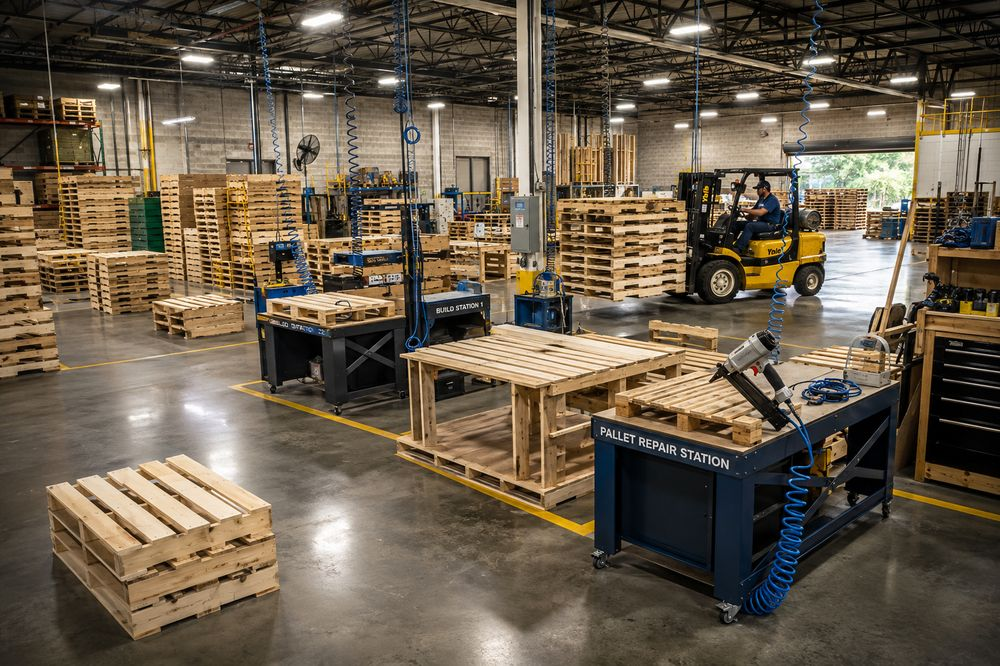
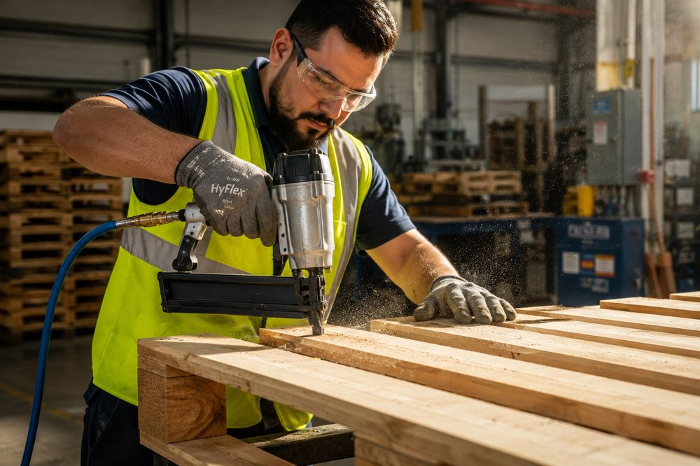
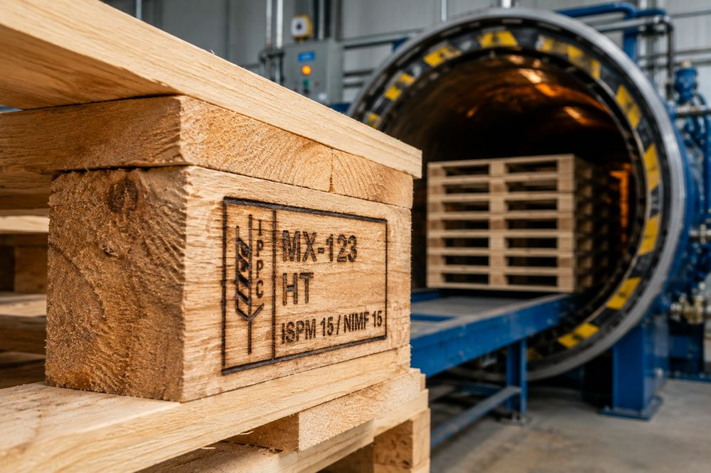

Operación de un taller de reparación de tarimas
Metodología de flujo continuo — evita cuellos de botella en inspección y acumulación de desperdicio en patio. Convertir un centro de costo en un motor de eficiencia empieza por dominar estos 6 pasos.
Entrada de material al patio del taller
Recepción y conteo inicial. Se segregan las tarimas de pooling (CHEP, PECO) de las de madera blanca (white wood).
Evaluación técnico-estructural
Inspección y triaje: estado de deckboards, integridad de barrotes/largueros, astillamiento, clavos expuestos, humedad.
Determinación del destino del activo
Clasificación y enrutamiento a Grado A, B, C, Reconstrucción o Baja/Scrap.
Mecanizado y reemplazo de componentes
Corte de clavos con sierra de sable (pata de rata), colocación de tablas de reemplazo y refuerzos de barrote con clavadora neumática.
Validación operacional (QA) y limpieza
Escuadra correcta, sin clavos proyectados, capacidad de carga nominal (1,000–1,500 kg en rack) no comprometida.
Reingreso a operación y registro WMS/ERP
Se apilan en lotes de 15–20 piezas, se etiquetan y se dan de alta como inventario disponible (Ready to Process).

Roles y estructura de personal
| Rol | Responsabilidad clave | Benchmark / turno |
|---|---|---|
| Supervisor de taller | KPIs, control de insumos (madera/clavos), seguridad (EHS), integración con WMS | 1 por turno |
| Clasificador / Inspector | Triaje visual rápido, separación por grados, desvío de pooling | 600–800 tarimas/turno |
| Técnico reparador | Desmonte de piezas dañadas, clavado neumático, colocación de parches | 120–180 tarimas/turno |
| Montacarguista / Auxiliar | Alimentación de estaciones, evacuación de producto terminado y scrap | Surtido a 4–6 estaciones |

Clasificación de tarimas (Grading)
Estándar NWPCA (National Wooden Pallet & Container Association) y especificaciones GMA (48" × 40") — el más extendido en Norteamérica.
| Grado | Condición estructural | Especificaciones técnicas | Uso típico |
|---|---|---|---|
| Grado A · Premium | Excelente estado, sin reparaciones en barrotes principales | Tablas completas sin rajaduras severas | Retail autoservicio, racks automáticos/High-Bay |
| Grado B · Estándar | Buena integridad, con reparaciones en barrotes | Parches (companion stringers) junto a barrotes agrietados | Traslados inter-sucursales, circuitos cerrados |
| Grado C · Económica | Altamente reparada o desgaste severo | Múltiples parches, mezcla de maderas | Cargas de una sola vía, mercancía pesada |
| Scrap / Baja | Daño estructural irrecuperable | Fracturas en >2 barrotes o >50% de tablas destruidas | Canibalización o triturado (biomasa) |
Criterio decisor: reparar vs. dar de baja
Taller propio vs. compra nueva vs. terceros
La internalización solo se justifica con volumen suficiente y operación en circuito cerrado.
| Criterio | Taller propio | Compra nueva | Tercerización / Pooling |
|---|---|---|---|
| Costo unitario | $2.50–$4.50 USD | $14.00–$22.00 USD | $6.00–$9.00 USD |
| Control de calidad | Total — ajustado a estándar interno | Nulo post-compra | Medio-alto — estándar del pooler |
| Tiempo de respuesta | Inmediato — horas o mismo día | Variable — sujeto a lead time | Medio — depende de recolección |
| CAPEX requerido | Medio — herramientas, aire comprimido | Nulo — gasto puro OPEX | Nulo — modelo servitizado |
| Riesgos | EHS, residuos de madera, MO directa | Inmovilización de capital de trabajo | Penalizaciones por daños severos |
Controles óptimos y normativa técnica
Los 4 KPIs que un jefe de almacén debe reportar, la trazabilidad en WMS, y el marco fitosanitario NIMF-15 / NOM-144.
Rendimiento por hora-hombre
Tasa de recuperación (% Yield)
Costo promedio por reparación
% de rechazo en QA
Trazabilidad en WMS/ERP — sub-almacenes virtuales
↓
↓ ↓
(listo para operación) (venta a reciclador)

NIMF-15 (ISPM 15)
Exige tratamiento térmico (HT) donde el núcleo de la madera alcance 56°C durante al menos 30 minutos, para productos de exportación o transporte transfronterizo.
NOM-144-SEMARNAT (México)
Establece las medidas fitosanitarias reconocidas internacionalmente para el embalaje de madera en México.
Las tarimas pintadas (Azul = CHEP, Rojo/Verde = PECO) son propiedad legal de sus empresas de arrendamiento. Bajo ninguna circunstancia deben repararse, cortarse o pintarse en un taller interno. Hacerlo viola los contratos de servicio y genera penalizaciones económicas severas. Deben segregarse en patio y retornarse a los depósitos autorizados.
Mejores prácticas y errores comunes
Lo que separa un taller rentable de uno que solo mueve el problema de lugar.